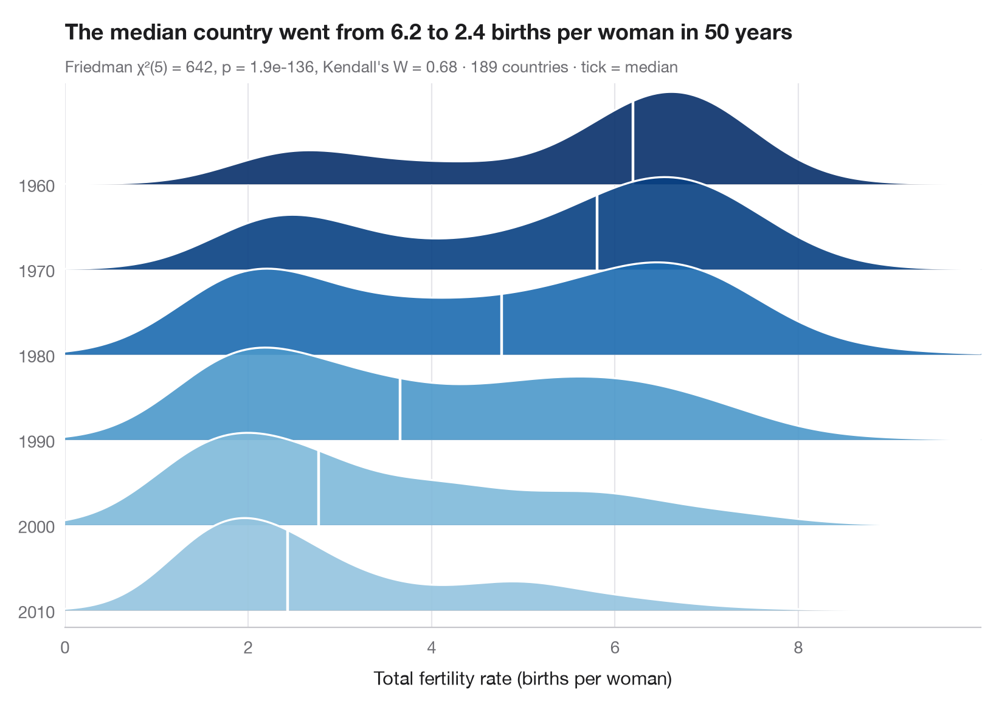

山脊图
以相互重叠的密度曲线比较多个组的同一分布。

山脊图（又称“joy”图）为每组绘制一条密度曲线并纵向堆叠，曲线之间略有重叠，从而在一张紧凑的图中容纳十几个分布。这里每条山脊代表一个日历月份，展示 61 年间海表温度的变化；白色刻线标出中位数，颜色也编码中位数，季节周期与年际离散可以一并读出。
数据为 statsmodels 自带的 El Niño 月度海表温度（1950–2010）（sm.datasets.elnino）。密度由 scipy.stats.gaussian_kde 计算；由于每一年在每个月都贡献一个值，副标题报告 Friedman 检验（scipy.stats.friedmanchisquare），并以 Kendall's W 作为效应量。
代码及图中文字均为英文。
import matplotlib.pyplot as plt
import numpy as np
import statsmodels.api as sm
from scipy import stats
# Data: one row per year, one column per month
sst = sm.datasets.elnino.load_pandas().data.drop(columns="YEAR")
months = list(sst.columns)
# Friedman test (years are blocks) + Kendall's W
chi2, p = stats.friedmanchisquare(*[sst[m] for m in months])
W = chi2 / (len(sst) * (len(months) - 1))
grid = np.linspace(sst.values.min() - 1, sst.values.max() + 1, 400)
medians = sst.median()
cmap, norm = plt.get_cmap("RdBu_r"), plt.Normalize(medians.min() - 0.6, medians.max() + 0.6)
fig, ax = plt.subplots(figsize=(8, 6.4))
spacing, height = 1.0, 2.2 # vertical gap between ridges, peak height of a ridge
for i, m in enumerate(months):
base = (len(months) - 1 - i) * spacing # January on top
dens = stats.gaussian_kde(sst[m])(grid)
curve = base + height * dens / dens.max() * 0.6
color = cmap(norm(medians[m]))
ax.fill_between(grid, base, curve, color=color, alpha=0.9, lw=0, zorder=2 * i)
ax.plot(grid, curve, color="white", lw=1.2, zorder=2 * i + 1)
ax.axhline(base, color="#C7C7CC", lw=0.6, zorder=2 * i)
# White tick at the median
y_med = base + height * stats.gaussian_kde(sst[m])(medians[m])[0] / dens.max() * 0.6
ax.plot([medians[m]] * 2, [base, y_med], color="white", lw=1.6, zorder=2 * i + 1)
ax.set_yticks([(len(months) - 1 - i) * spacing for i in range(len(months))],
[m.capitalize() for m in months])
ax.set_ylim(-0.2, (len(months) - 1) * spacing + height * 0.6 + 0.1)
ax.set_xlim(grid[0], grid[-1])
ax.grid(axis="x"); ax.grid(axis="y", visible=False)
ax.spines["left"].set_visible(False)
ax.set_xlabel("Sea-surface temperature (°C)")
ax.set_title("El Niño waters peak in March and bottom out in September", pad=26)
ax.text(0, 1.02, f"Friedman χ²({len(months) - 1}) = {chi2:.0f}, p = {p:.1e}, Kendall's W = {W:.2f}"
f" · {len(sst)} years (1950–2010) · tick = median", transform=ax.transAxes,
fontsize=9.5, color="#6E6E73")
plt.show()
图表使用了可选的 Statlas 样式：添加 plt.style.use("statlas.mplstyle") 即可完全还原其外观。
如何引用
Statlas 由 Thierry Warin 创建并维护。如果它对你的工作有所帮助，敬请引用。
Warin, T. (2026). Ridgeline plot. In Statlas: The Python Gallery of Statistical Graphics. https://warint.github.io/statlas/distributions/ridgeline/
@misc{warin2026statlas,
author = {Warin, Thierry},
title = {Statlas: The Python Gallery of Statistical Graphics},
year = {2026},
howpublished = {\url{https://warint.github.io/statlas/}},
note = {Source code: https://github.com/warint/statlas}
}